On generalized Rademacher
Junming Guan
2026-06-02
Last updated: 2026-06-16
Checks: 7 0
Knit directory: misc/
This reproducible R Markdown analysis was created with workflowr (version 1.7.2). The Checks tab describes the reproducibility checks that were applied when the results were created. The Past versions tab lists the development history.
Great! Since the R Markdown file has been committed to the Git repository, you know the exact version of the code that produced these results.
Great job! The global environment was empty. Objects defined in the global environment can affect the analysis in your R Markdown file in unknown ways. For reproduciblity it’s best to always run the code in an empty environment.
The command set.seed(20251108) was run prior to running
the code in the R Markdown file. Setting a seed ensures that any results
that rely on randomness, e.g. subsampling or permutations, are
reproducible.
Great job! Recording the operating system, R version, and package versions is critical for reproducibility.
Nice! There were no cached chunks for this analysis, so you can be confident that you successfully produced the results during this run.
Great job! Using relative paths to the files within your workflowr project makes it easier to run your code on other machines.
Great! You are using Git for version control. Tracking code development and connecting the code version to the results is critical for reproducibility.
The results in this page were generated with repository version 715cfb8. See the Past versions tab to see a history of the changes made to the R Markdown and HTML files.
Note that you need to be careful to ensure that all relevant files for
the analysis have been committed to Git prior to generating the results
(you can use wflow_publish or
wflow_git_commit). workflowr only checks the R Markdown
file, but you know if there are other scripts or data files that it
depends on. Below is the status of the Git repository when the results
were generated:
Ignored files:
Ignored: .DS_Store
Ignored: .Rhistory
Ignored: .Rproj.user/
Ignored: .luarc.json
Ignored: _extensions/
Ignored: analysis/.DS_Store
Ignored: analysis/exploratiion_normal_prior_on_factor.html
Ignored: analysis/presentation.html
Untracked files:
Untracked: Rplots.pdf
Untracked: analysis/draft.Rmd
Untracked: analysis/eb_ica_backup.Rmd
Untracked: analysis/ebica_math.md
Untracked: analysis/flashier_whitened_and_tree_example_tese.Rmd
Untracked: analysis/ica_vs_flash_r1_rad copy.Rmd
Untracked: analysis/ica_vs_flash_r1_rad.Rmd
Untracked: analysis/ica_vs_flash_r1_update_2.Rmd
Untracked: analysis/index_bacup.Rmd
Untracked: analysis/preemble.tex
Untracked: analysis/presentation.qmd
Untracked: analysis/references.bib
Untracked: analysis/tree_example.Rmd
Untracked: code/references.bib
Unstaged changes:
Modified: .gitignore
Modified: analysis/eb_ica.Rmd
Modified: analysis/flashier_whitened_and_tree_example.Rmd
Modified: analysis/ica_vs_flash_r1_update_1.Rmd
Modified: analysis/ica_vs_flashier_r1_rad.Rmd
Modified: analysis/ica_with_noise.Rmd
Modified: analysis/on_flashier_and_whitened_data.Rmd
Note that any generated files, e.g. HTML, png, CSS, etc., are not included in this status report because it is ok for generated content to have uncommitted changes.
These are the previous versions of the repository in which changes were
made to the R Markdown
(analysis/on_generalized_rademacher.Rmd) and HTML
(docs/on_generalized_rademacher.html) files. If you’ve
configured a remote Git repository (see ?wflow_git_remote),
click on the hyperlinks in the table below to view the files as they
were in that past version.
| File | Version | Author | Date | Message |
|---|---|---|---|---|
| Rmd | 715cfb8 | junmingguan | 2026-06-16 | wflow_publish("analysis/on_generalized_rademacher.Rmd") |
| html | d54315d | junmingguan | 2026-06-11 | Build site. |
| Rmd | 47e0ab1 | junmingguan | 2026-06-11 | wflow_publish(c("analysis/on_generalized_rademacher.Rmd")) |
| html | fa515bd | junmingguan | 2026-06-11 | Build site. |
| Rmd | bc63dde | junmingguan | 2026-06-11 | wflow_publish(c("analysis/on_generalized_rademacher.Rmd", "analysis/index.Rmd")) |
| html | 70043e2 | junmingguan | 2026-06-11 | Build site. |
| Rmd | b694bcd | junmingguan | 2026-06-11 | wflow_publish("analysis/on_generalized_rademacher.Rmd") |
Introduction
In this analysis, I compare EBICA with a Rademacher prior, EBICA with a generalized Rademacher prior (where the prior probability \(\pi\) is estimated by maximizing the marginal likelihood), and fastICA, on the whitened data with and without an intercept in the 9 unbalanced group examples.
Without an intercept, none of the three approaches appears to capture one true source; for EBICA generalized Rademacher, the estimated prior probability also seems far off from the true 0.2/0.8 probabilities.
With the intercept added, EBICA generalized Rademacher always picks up the trivial solution, with \(\hat{\pi}=1/0\), which is not ideal; I wonder if it makes sense to put a prior on \(\pi\) to shrink it toward \(0.5\), say \(\text{Beta}(5, 5)\)? EBICA Rademacher, on the other hand, is very similar to fastICA as expected, but fastICA seems to capture the trivial solution slightly more often, probably due to the Newton “acceleration”.
library(flashier)Loading required package: ebnmlibrary(pheatmap)Warning: package 'pheatmap' was built under R version 4.3.3code_dir <- if (dir.exists("code")) "code" else "../code"
source(file.path(code_dir, "ica_functions.R"))
source(file.path(code_dir, "ebnm_rademacher.R"))
source(file.path(code_dir, "ebnm_point_rademacher.R"))
source(file.path(code_dir, "ebnm_normal_fixed_sd.R"))
source(file.path(code_dir, "utils.R"))
flash_x_rademacher <- function(X, S_init, ebnm_fn = ebnm_normal, ebnm_source = ebnm_rademacher, S = NULL, var_type = 1, backfit = TRUE, maxiter = 30) {
if (is.vector(S_init)) S_init <- matrix(S_init, ncol = 1)
A_init = t(solve(crossprod(S_init), crossprod(S_init, t(X))))
if (!is.null(S)) {
var_type = NULL
}
lambda_path = c()
elbo_path <- c()
resid_path <- c()
z_prior_var_path <- c()
res <- flash_init(X, var_type = var_type, S = S) |>
flash_factors_init(
init = list(A_init, S_init),
ebnm_fn = list(ebnm_fn, ebnm_source)
)
lambda_path[1] = t(S_init) %*% t(X) %*% X %*% S_init
elbo_path[1] = res$elbo
resid_path[1] = res$residuals_sd
z_prior_var_path[1] = res$L_ghat[[1]]$sd
for (i in 1:maxiter) {
res <- res |>
flash_backfit(verbose = 0, extrapolate = TRUE, maxiter = 1)
lambda_path[i+1] = t(res$F_pm) %*% t(X) %*% X %*% res$F_pm
elbo_path[i+1] = res$elbo
resid_path[i+1] = res$residuals_sd
z_prior_var_path[i+1] = res$L_ghat[[1]]$sd
}
return(list(res=res, lambda_path = lambda_path,
elbo_path = elbo_path, resid_path = resid_path,
z_prior_var_path = z_prior_var_path))
}ebnm_rademacher_0.2 <- function(
x,
s = 1,
mode = 0,
g_init = NULL,
fix_g = FALSE,
output = NULL,
control = NULL
) {
ebnm_generalized_rademacher(
x = x,
s = s,
mode = mode,
m = 1,
g_init = rademacher(pi = 0.2, m = 1),
fix_g = TRUE
)
}9 unbalanced groups
K=9
p = 1000
n = 100
set.seed(1)
L = matrix(-1,nrow=n,ncol=K)
for(i in 1:K){L[sample(1:n,20),i]=1}
FF = matrix(rnorm(p*K), nrow = p, ncol=K)
X = L %*% t(FF) + rnorm(n*p,0,0.01)
plot(X %*% FF[,1])
X1 = preprocess(X, n.comp = K)
# X1 = rbind(rep(1,ncol(X1)), X1)No intercept
generalized.rad.corr.max <- c()
rad.corr.max <- c()
rad.0.2.corr.max <- c()
fastica.corr.max <- c()
generalized.rad.obj <- c()
rad.obj <- c()
rad.0.2.obj <- c()
fastica.obj <- c()
generalized.rad.Lhat <- matrix(0, nrow = 100, ncol = 100)
rad.Lhat <- matrix(0, nrow = 100, ncol = 100)
rad.0.2.Lhat <- matrix(0, nrow = 100, ncol = 100)
fastica.Lhat <- matrix(0, nrow = 100, ncol = 100)
generalized.rad.prior.prob <- c()
for (seed in 1:100) {
set.seed(seed = seed)
W_init = rnorm(dim(X1)[1]) #X1 %*% L[,1]
res.generalized.rad = ebica(X1, s = 1, W_init = W_init, max_iter = 100)
res.rad = ebica(X1, s = 1, W_init = W_init, symmetric_rademacher = T, max_iter = 100)
res.0.2.rad = ebica_generalized_parallel(X1, K=1, ebnm_fn = ebnm_rademacher_0.2, s = 1, W_init = W_init, max_iter = 100)
fastica_rank_one_update(X1, init_w = W_init)
generalized.rad.corr.max[seed] = max(abs(cor(L, res.generalized.rad$S)))
generalized.rad.obj[seed] = compute_objective(X1, res.generalized.rad$W)
generalized.rad.Lhat[seed,] = res.generalized.rad$S
generalized.rad.prior.prob[seed] = ifelse(res.generalized.rad$prior_probs > 0.5, res.generalized.rad$prior_probs, 1 - res.generalized.rad$prior_probs)
rad.corr.max[seed] = max(abs(cor(L, res.rad$S)))
rad.obj[seed] = compute_objective(X1, res.rad$W)
rad.Lhat[seed,] = res.rad$S
rad.0.2.corr.max[seed] = max(abs(cor(L, res.0.2.rad$S)))
rad.0.2.obj[seed] = compute_objective(X1, res.0.2.rad$W)
rad.0.2.Lhat[seed,] = res.0.2.rad$S
}FastICA
init_W = matrix(0, ncol = 100, nrow = dim(X1)[1])
for (seed in 1:100) {
set.seed(seed)
init_W[,seed] = rnorm(dim(X1)[1])
}
W = fastica_vectorized_rank_one_update(X1, init_W = init_W, include_G2 = TRUE)
fastica.obj = apply(W, 2, FUN = function(w) {compute_objective(X1, w)})
fastica.corr.max = apply(W, 2, FUN = function(w) {max(abs(cor(L, t(X1) %*% w)))})
fastica.Lhat = t(t(X1) %*% W)plot(sort(generalized.rad.obj), ylab = "logcosh objective",
main = 'Generalized Rademacher')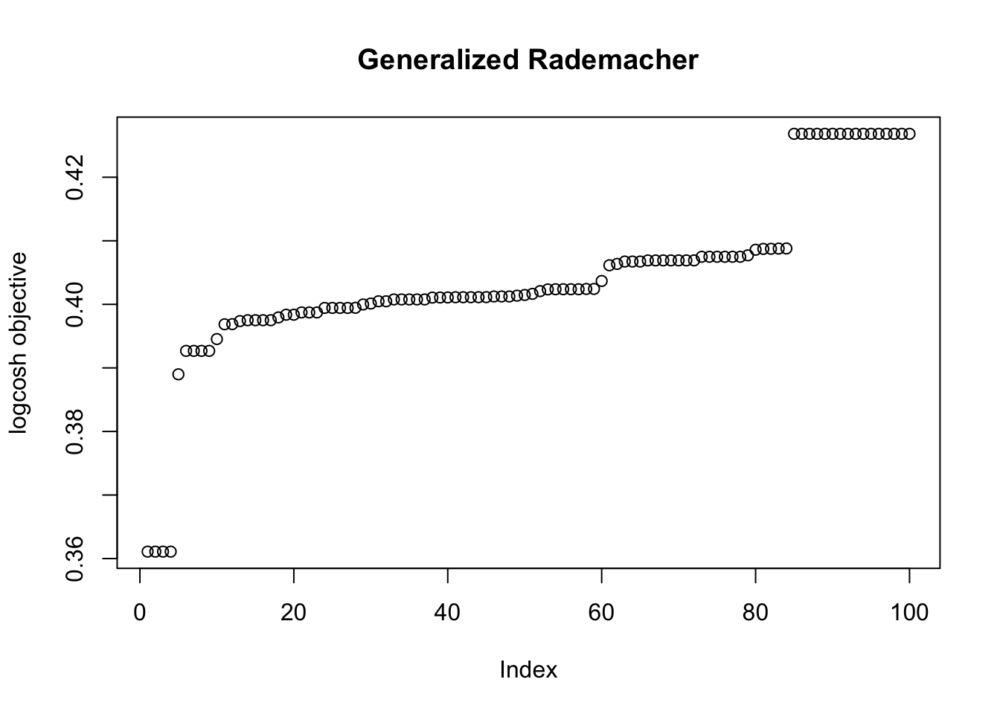
plot(generalized.rad.corr.max[order(generalized.rad.obj)], ylab = "Max correlation with a true source",
main = 'Generalized Rademacher')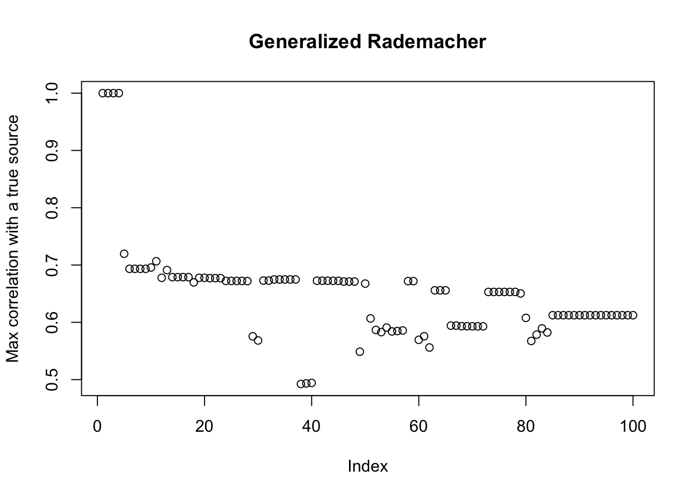
plot(generalized.rad.prior.prob[order(generalized.rad.obj)], ylab = "Estimated prior probability",
main = 'Generalized Rademacher')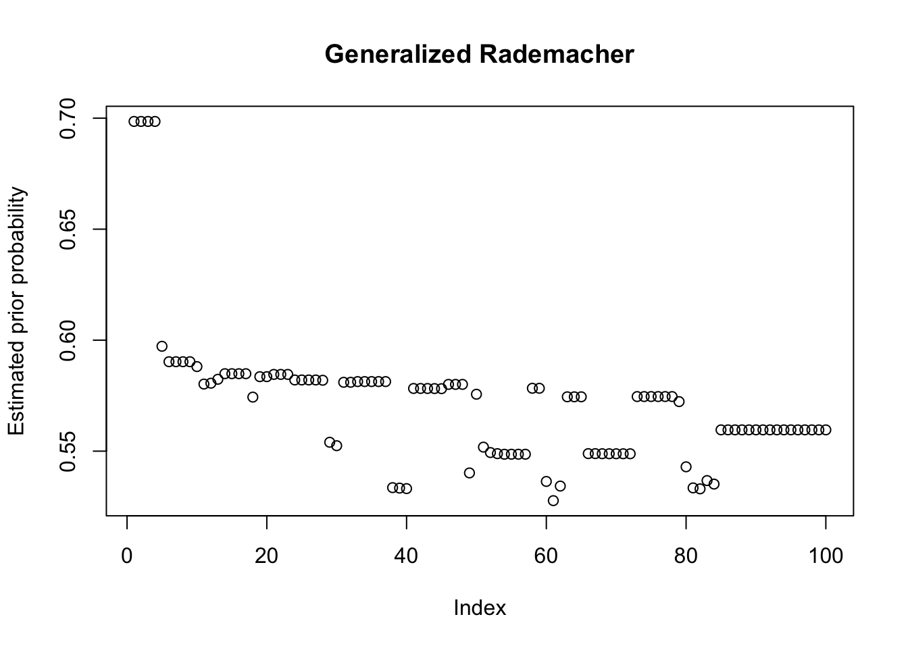
plot_heatmap(t(generalized.rad.Lhat[order(generalized.rad.obj), ]))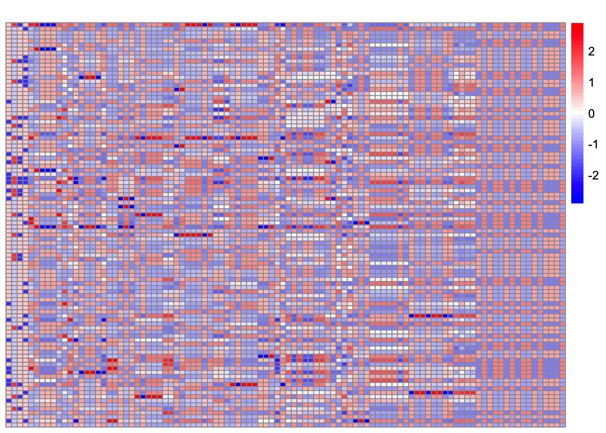
plot(sort(rad.obj), ylab = "logcosh objective",
main = 'Rademacher')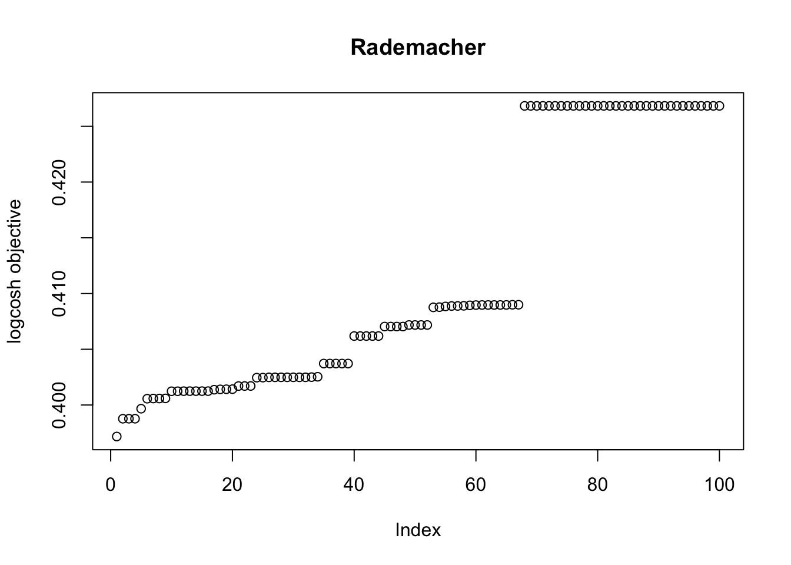
plot(rad.corr.max[order(rad.obj)], ylab = "Max correlation with a true source",
main = 'Rademacher')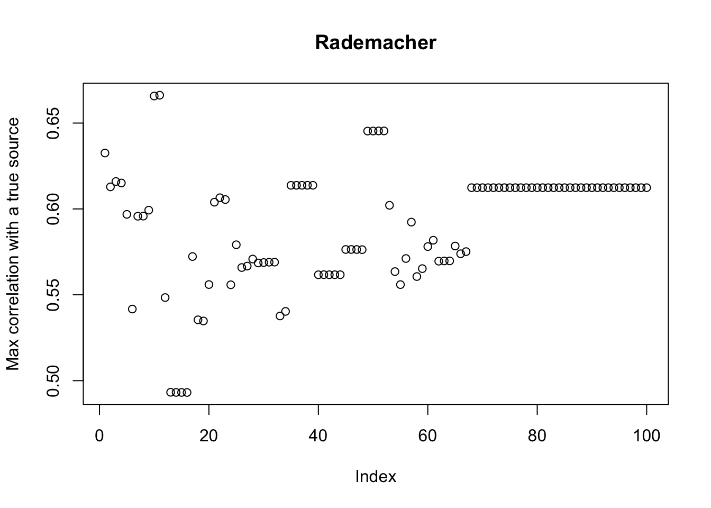
plot_heatmap(t(rad.Lhat[order(rad.obj), ]))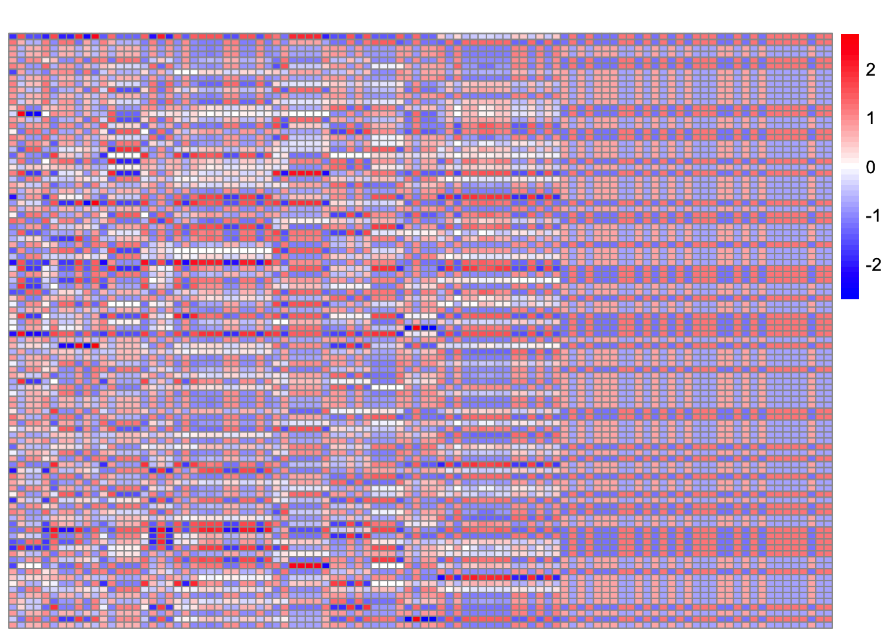
plot(sort(rad.0.2.obj), ylab = "logcosh objective",
main = 'Generalized Rademacher p=0.2')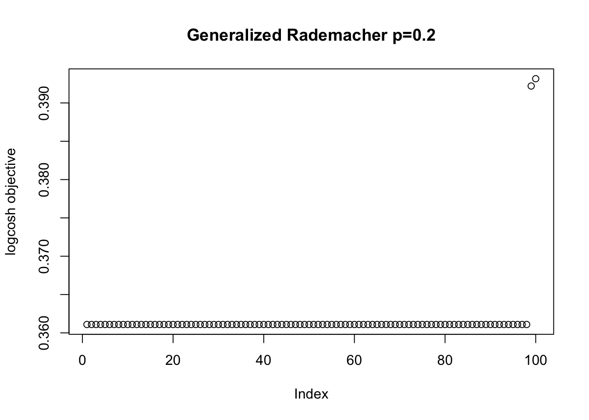
plot(rad.0.2.corr.max[order(rad.0.2.obj)], ylab = "Max correlation with a true source",
main = 'Generalized Rademacher p=0.2')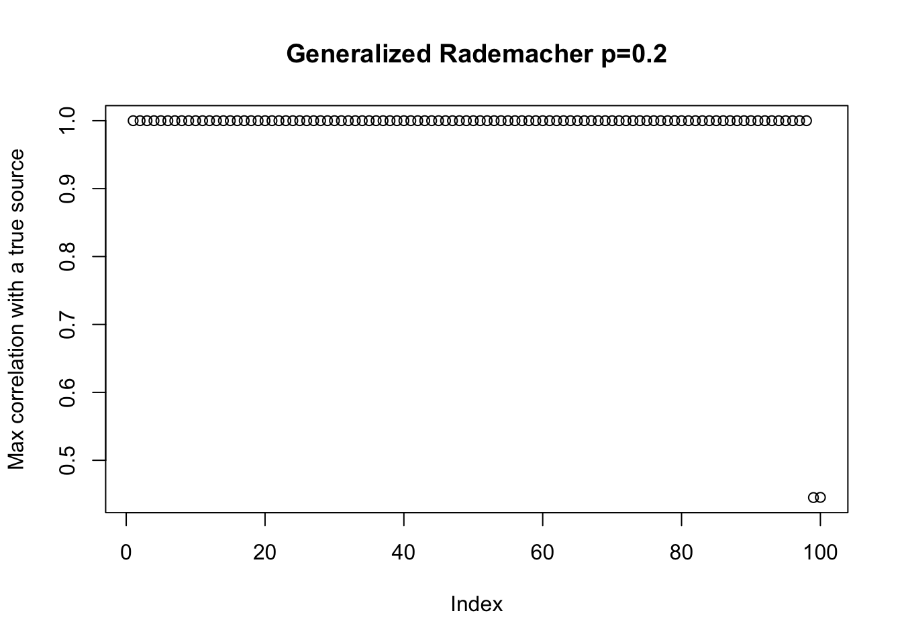
plot_heatmap(t(rad.0.2.Lhat[order(rad.0.2.obj), ]))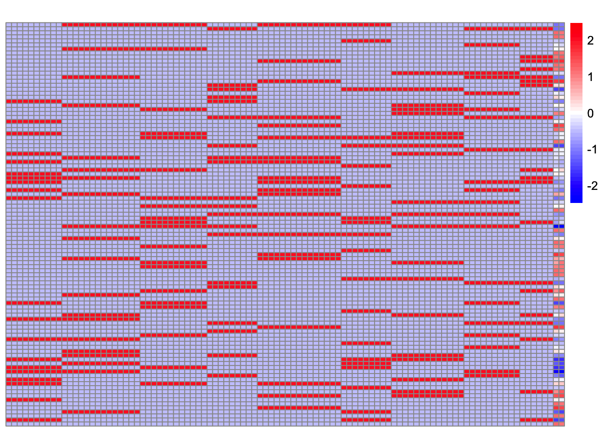
plot(sort(fastica.obj), ylab = "logcosh objective",
main = 'fastICA')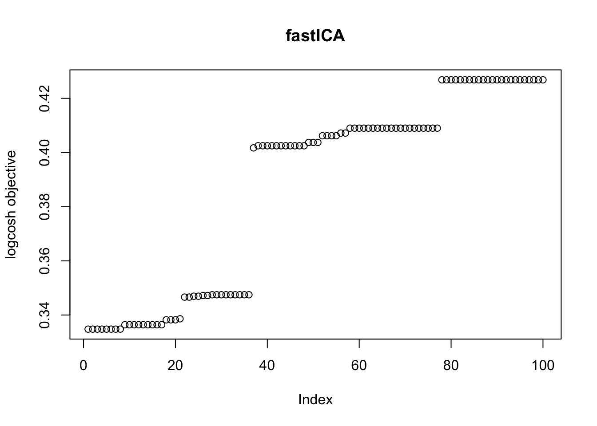
plot(fastica.corr.max[order(fastica.obj)], ylab = "Max correlation with a true source",
main = 'fastICA')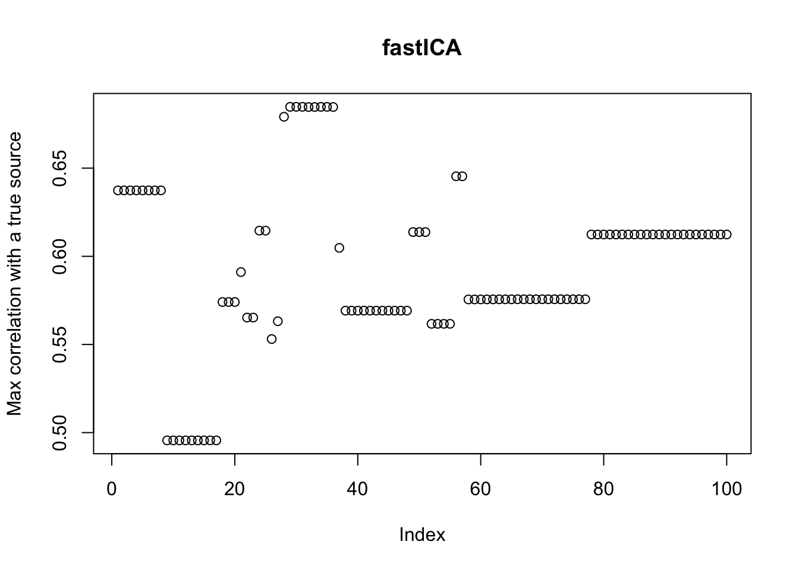
plot_heatmap(t(fastica.Lhat[order(fastica.obj), ]))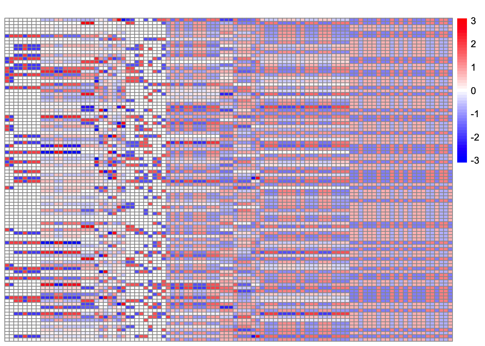
With intercept
X1 = preprocess(X, n.comp = K)
X1 = rbind(rep(1,ncol(X1)), X1)generalized.rad.corr.max <- c()
rad.corr.max <- c()
rad.0.2.corr.max <- c()
fastica.corr.max <- c()
generalized.rad.obj <- c()
rad.obj <- c()
rad.0.2.obj <- c()
fastica.obj <- c()
generalized.rad.Lhat <- matrix(0, nrow = 100, ncol = 100)
rad.Lhat <- matrix(0, nrow = 100, ncol = 100)
rad.0.2.Lhat <- matrix(0, nrow = 100, ncol = 100)
fastica.Lhat <- matrix(0, nrow = 100, ncol = 100)
generalized.rad.prior.prob <- c()
for (seed in 1:100) {
set.seed(seed = seed)
W_init = rnorm(dim(X1)[1]) #X1 %*% L[,1]
res.generalized.rad = ebica(X1, s = 1, W_init = W_init, max_iter = 100)
res.rad = ebica(X1, s = 1, W_init = W_init, symmetric_rademacher = T, max_iter = 100)
res.0.2.rad = ebica_generalized_parallel(X1, K=1, ebnm_fn = ebnm_rademacher_0.2, s = 1, W_init = W_init, max_iter = 100)
fastica_rank_one_update(X1, init_w = W_init)
generalized.rad.corr.max[seed] = max(abs(cor(L, res.generalized.rad$S)))
generalized.rad.obj[seed] = compute_objective(X1, res.generalized.rad$W)
generalized.rad.Lhat[seed,] = res.generalized.rad$S
generalized.rad.prior.prob[seed] = ifelse(res.generalized.rad$prior_probs > 0.5, res.generalized.rad$prior_probs, 1 - res.generalized.rad$prior_probs)
rad.corr.max[seed] = max(abs(cor(L, res.rad$S)))
rad.obj[seed] = compute_objective(X1, res.rad$W)
rad.Lhat[seed,] = res.rad$S
rad.0.2.corr.max[seed] = max(abs(cor(L, res.0.2.rad$S)))
rad.0.2.obj[seed] = compute_objective(X1, res.0.2.rad$W)
rad.0.2.Lhat[seed,] = res.0.2.rad$S
}FastICA
init_W = matrix(0, ncol = 100, nrow = dim(X1)[1])
for (seed in 1:100) {
set.seed(seed)
init_W[,seed] = rnorm(dim(X1)[1])
}
W = fastica_vectorized_rank_one_update(X1, init_W = init_W, include_G2 = TRUE)
fastica.obj = apply(W, 2, FUN = function(w) {compute_objective(X1, w)})
fastica.corr.max = apply(W, 2, FUN = function(w) {max(abs(cor(L, t(X1) %*% w)))})
fastica.Lhat = t(t(X1) %*% W)plot(sort(generalized.rad.obj), ylab = "logcosh objective",
main = 'Generalized Rademacher')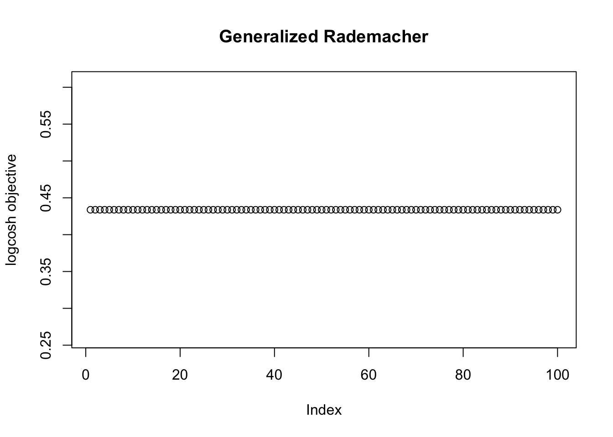
plot(generalized.rad.corr.max[order(generalized.rad.obj)], ylab = "Max correlation with a true source",
main = 'Generalized Rademacher')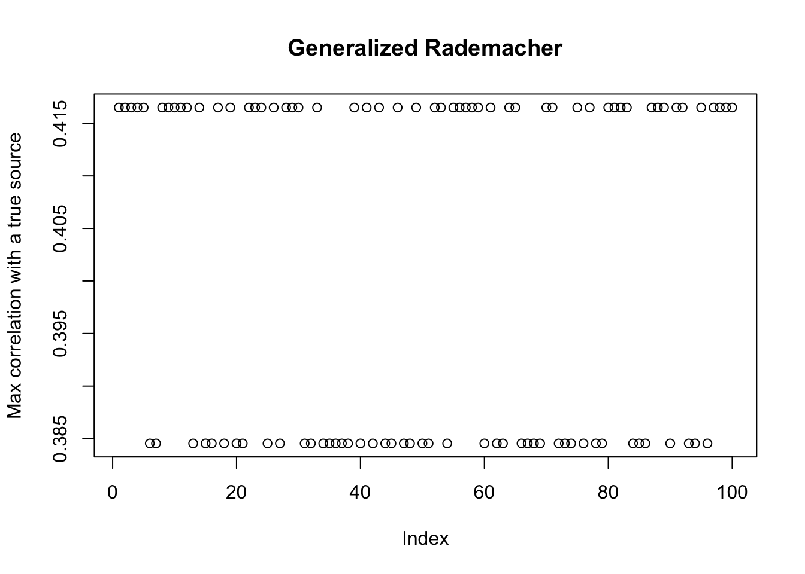
plot(generalized.rad.prior.prob[order(generalized.rad.obj)], ylab = "Estimated prior probability",
main = 'Generalized Rademacher')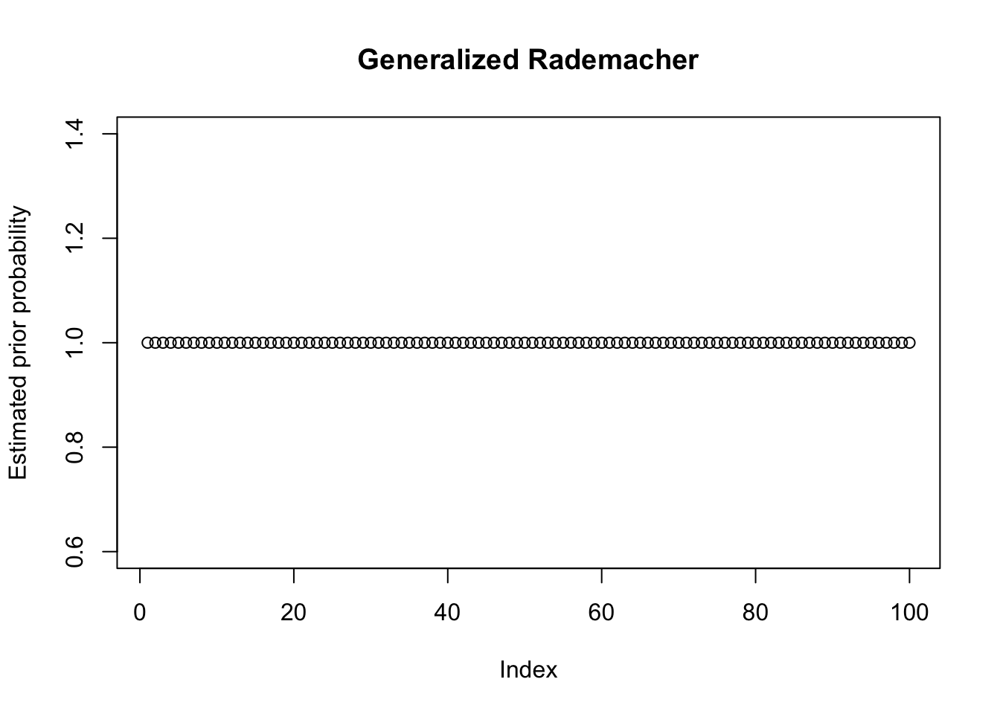
plot_heatmap(t(generalized.rad.Lhat[order(generalized.rad.obj), ]))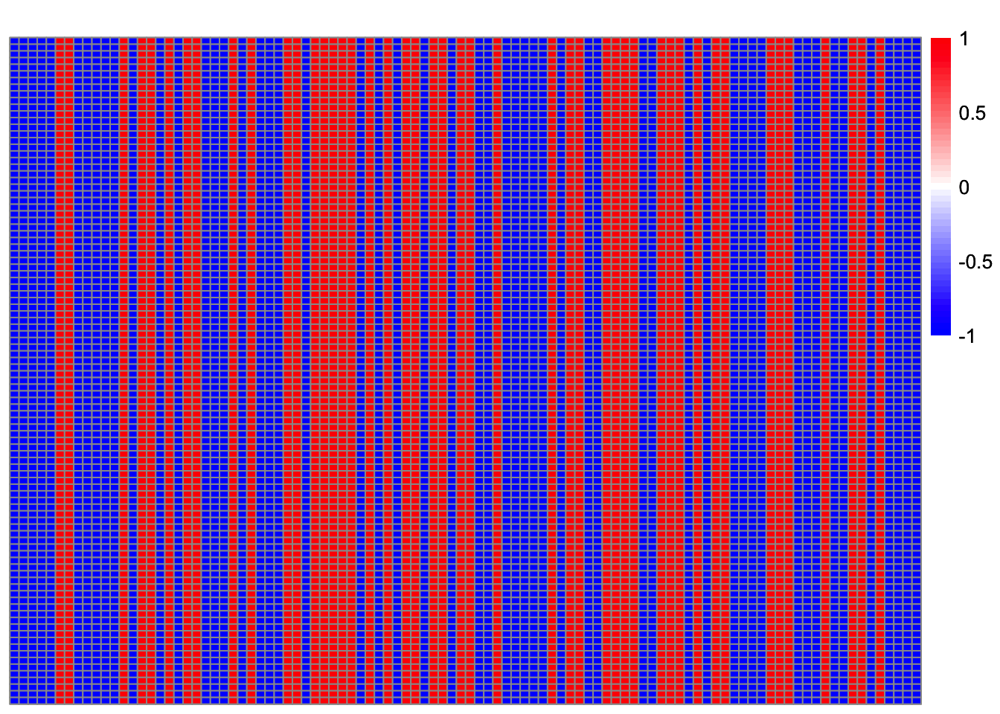
plot(sort(rad.obj), ylab = "logcosh objective",
main = 'Rademacher')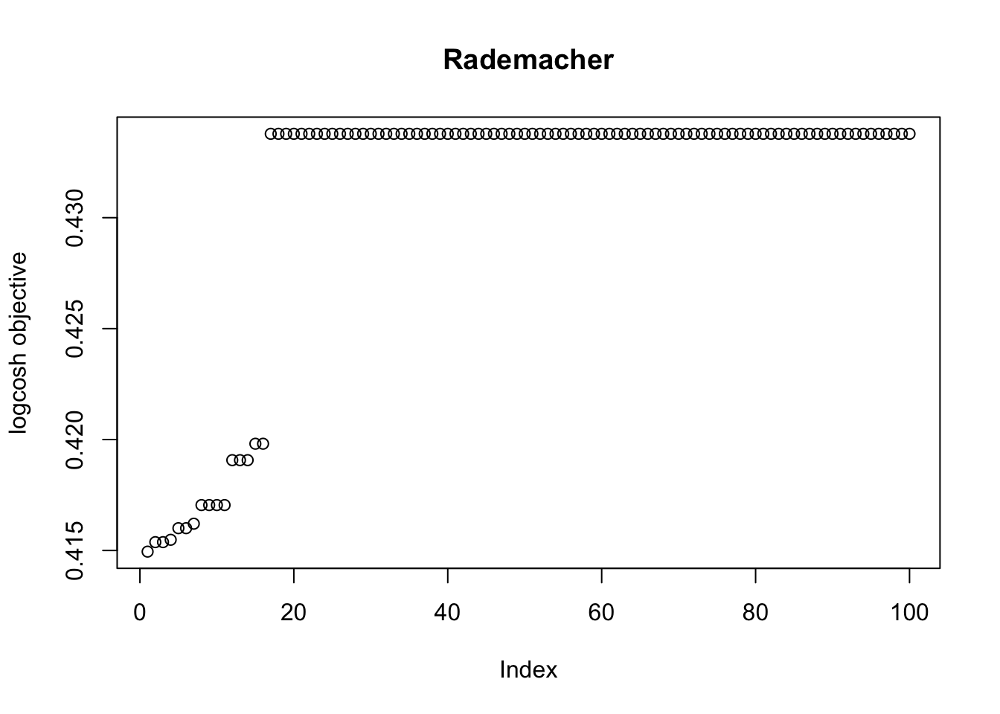
plot(rad.corr.max[order(rad.obj)], ylab = "Max correlation with a true source",
main = 'Rademacher')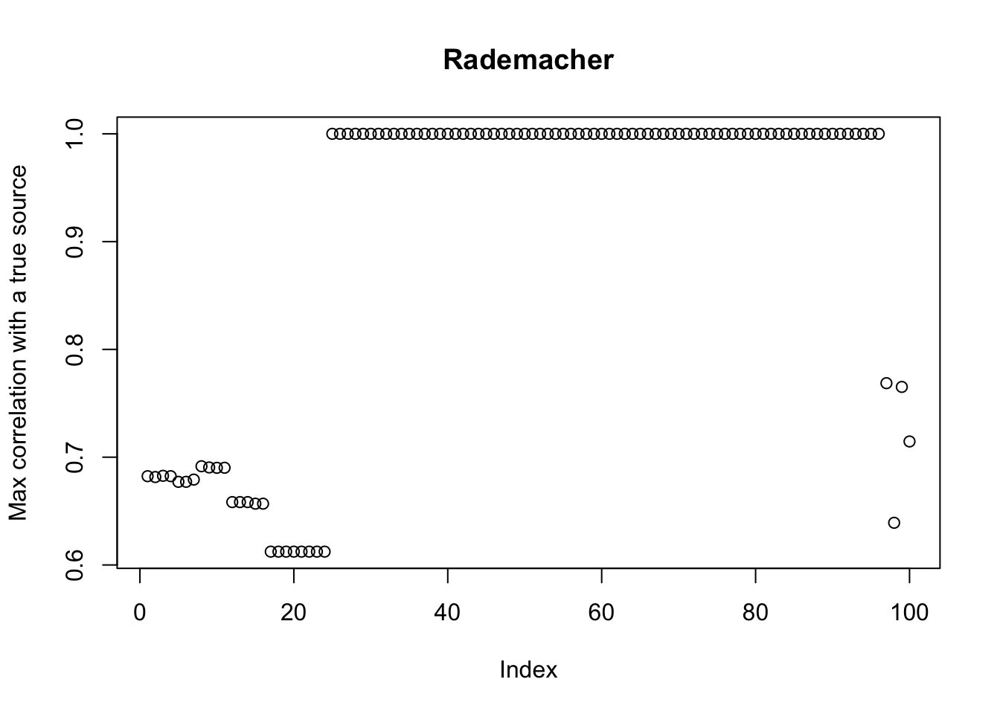
plot_heatmap(t(rad.Lhat[order(rad.obj), ]))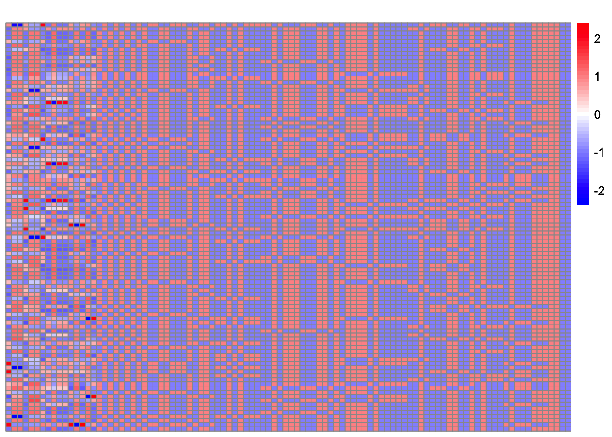
plot(sort(rad.0.2.obj), ylab = "logcosh objective",
main = 'Generalized Rademacher p=0.2')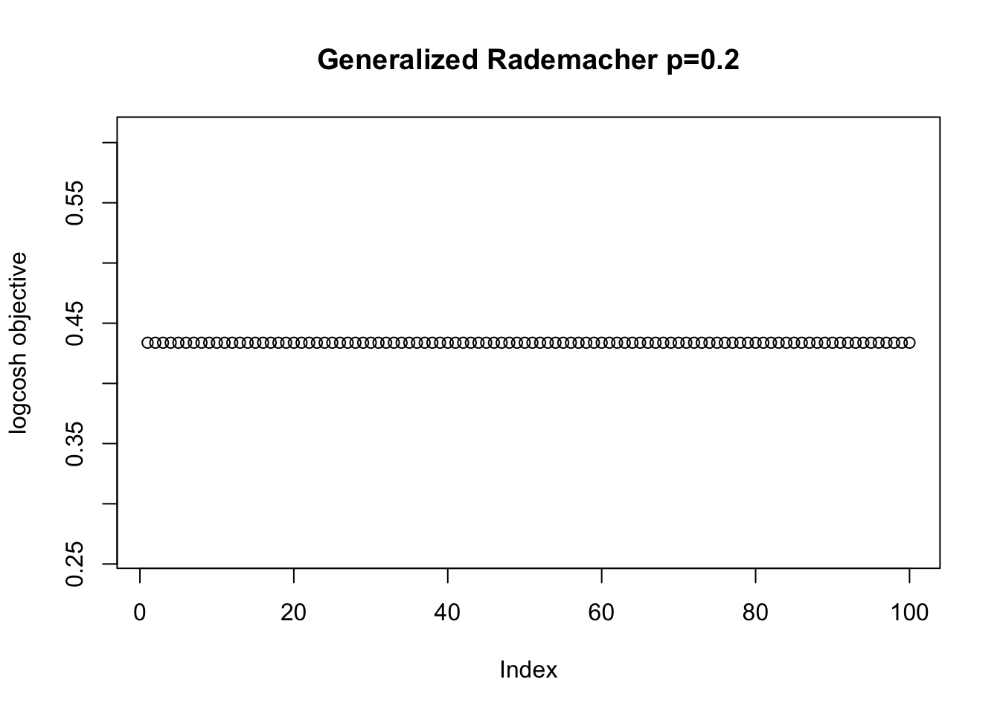
plot(rad.0.2.corr.max[order(rad.0.2.obj)], ylab = "Max correlation with a true source",
main = 'Generalized Rademacher p=0.2')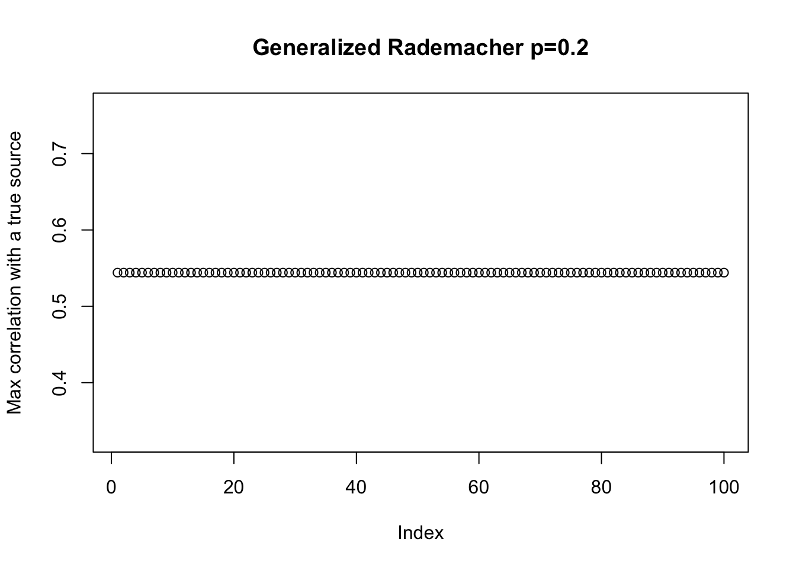
plot_heatmap(t(rad.0.2.Lhat[order(rad.0.2.obj), ]))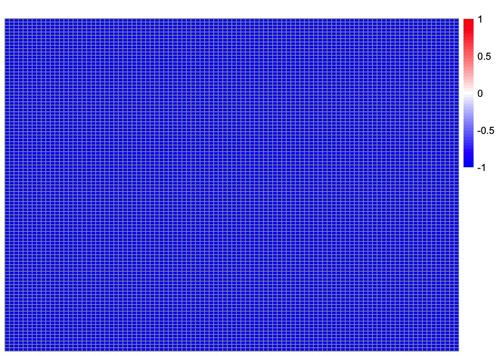
plot(sort(fastica.obj), ylab = "logcosh objective",
main = 'fastICA')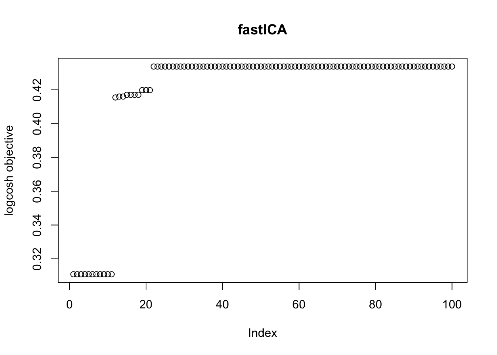
plot(fastica.corr.max[order(fastica.obj)], ylab = "Max correlation with a true source",
main = 'fastICA')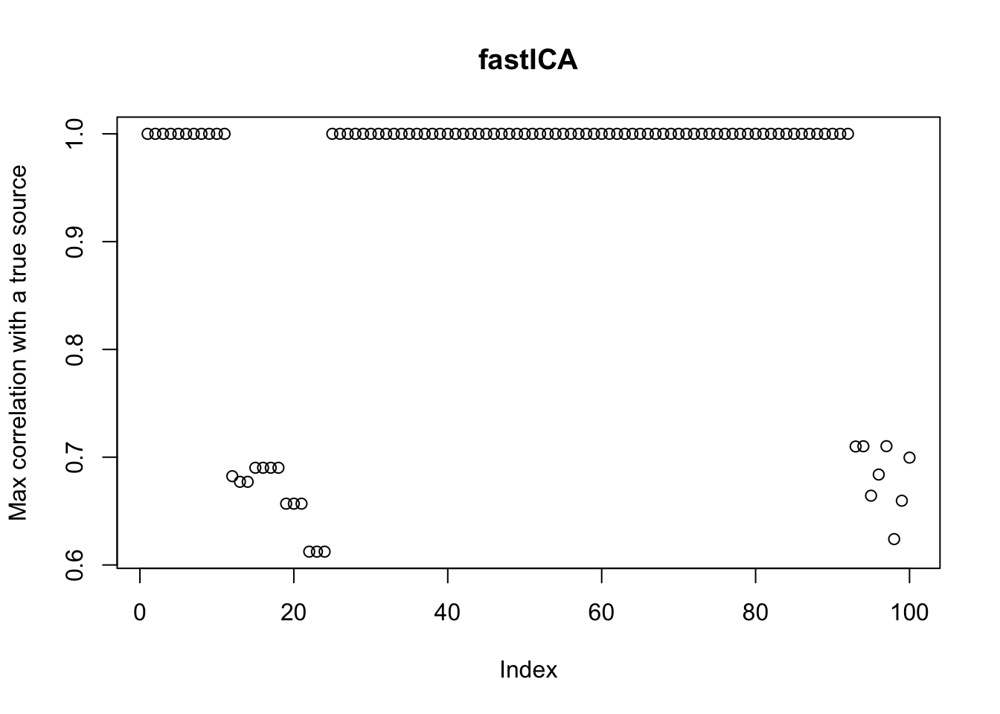
plot_heatmap(t(fastica.Lhat[order(fastica.obj), ]))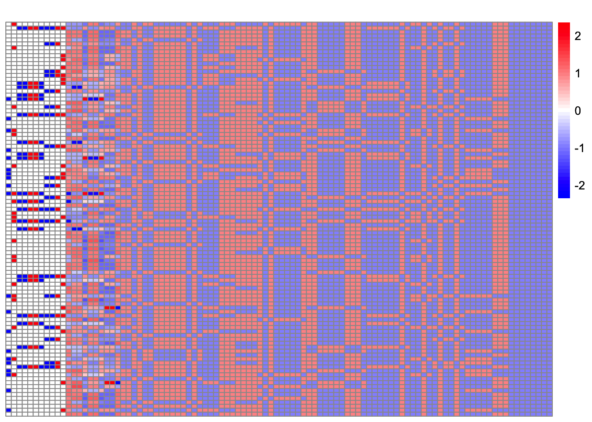
9 unbalanced groups
Here I tried applying no-intercept generalized Rademacher with \(\pi\) fixed to \(0.2\), while the true \(\pi\) is \(0.15\).
K=9
p = 1000
n = 100
set.seed(1)
L = matrix(-1,nrow=n,ncol=K)
for(i in 1:K){L[sample(1:n,10),i]=1}
FF = matrix(rnorm(p*K), nrow = p, ncol=K)
X = L %*% t(FF) + rnorm(n*p,0,0.01)
plot(X %*% FF[,1])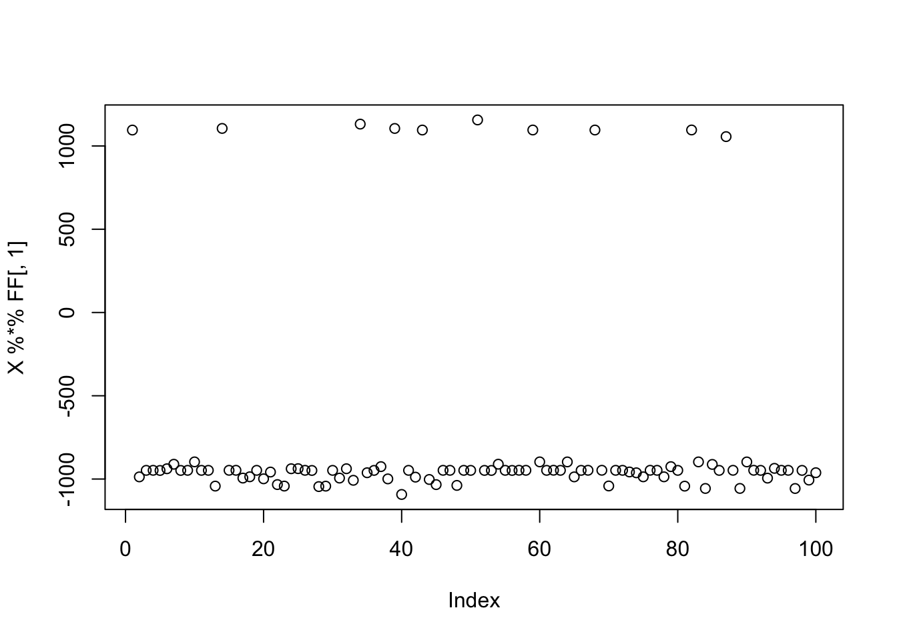
X1 = preprocess(X, n.comp = K)
# X1 = rbind(rep(1,ncol(X1)), X1)generalized.rad.corr.max <- c()
rad.corr.max <- c()
rad.0.2.corr.max <- c()
fastica.corr.max <- c()
generalized.rad.obj <- c()
rad.obj <- c()
rad.0.2.obj <- c()
fastica.obj <- c()
generalized.rad.Lhat <- matrix(0, nrow = 100, ncol = 100)
rad.Lhat <- matrix(0, nrow = 100, ncol = 100)
rad.0.2.Lhat <- matrix(0, nrow = 100, ncol = 100)
fastica.Lhat <- matrix(0, nrow = 100, ncol = 100)
generalized.rad.prior.prob <- c()
for (seed in 1:100) {
set.seed(seed = seed)
W_init = rnorm(dim(X1)[1]) #X1 %*% L[,1]
res.generalized.rad = ebica(X1, s = 1, W_init = W_init, max_iter = 100)
res.rad = ebica(X1, s = 1, W_init = W_init, symmetric_rademacher = T, max_iter = 100)
res.0.2.rad = ebica_generalized_parallel(X1, K=1, ebnm_fn = ebnm_rademacher_0.2, s = 1, W_init = W_init, max_iter = 100)
fastica_rank_one_update(X1, init_w = W_init)
generalized.rad.corr.max[seed] = max(abs(cor(L, res.generalized.rad$S)))
generalized.rad.obj[seed] = compute_objective(X1, res.generalized.rad$W)
generalized.rad.Lhat[seed,] = res.generalized.rad$S
generalized.rad.prior.prob[seed] = ifelse(res.generalized.rad$prior_probs > 0.5, res.generalized.rad$prior_probs, 1 - res.generalized.rad$prior_probs)
rad.corr.max[seed] = max(abs(cor(L, res.rad$S)))
rad.obj[seed] = compute_objective(X1, res.rad$W)
rad.Lhat[seed,] = res.rad$S
rad.0.2.corr.max[seed] = max(abs(cor(L, res.0.2.rad$S)))
rad.0.2.obj[seed] = compute_objective(X1, res.0.2.rad$W)
rad.0.2.Lhat[seed,] = res.0.2.rad$S
}FastICA
init_W = matrix(0, ncol = 100, nrow = dim(X1)[1])
for (seed in 1:100) {
set.seed(seed)
init_W[,seed] = rnorm(dim(X1)[1])
}
W = fastica_vectorized_rank_one_update(X1, init_W = init_W, include_G2 = TRUE)
fastica.obj = apply(W, 2, FUN = function(w) {compute_objective(X1, w)})
fastica.corr.max = apply(W, 2, FUN = function(w) {max(abs(cor(L, t(X1) %*% w)))})
fastica.Lhat = t(t(X1) %*% W)plot(sort(generalized.rad.obj), ylab = "logcosh objective",
main = 'Generalized Rademacher')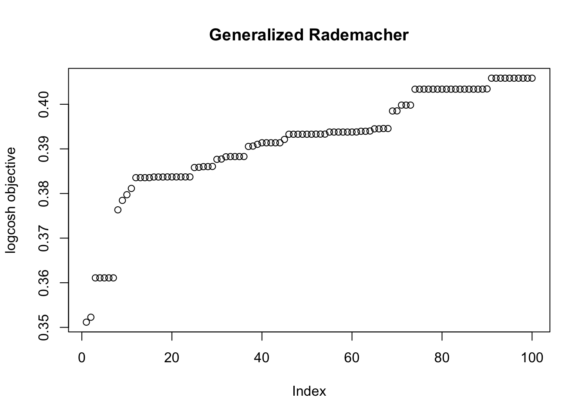
plot(generalized.rad.corr.max[order(generalized.rad.obj)], ylab = "Max correlation with a true source",
main = 'Generalized Rademacher')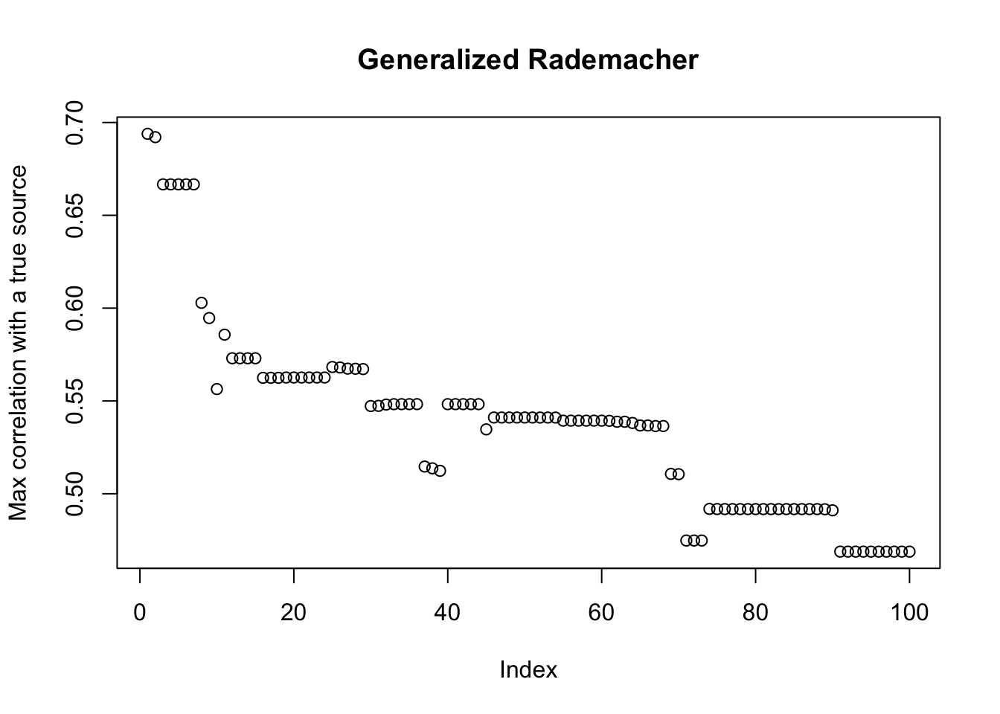
plot(generalized.rad.prior.prob[order(generalized.rad.obj)], ylab = "Estimated prior probability",
main = 'Generalized Rademacher')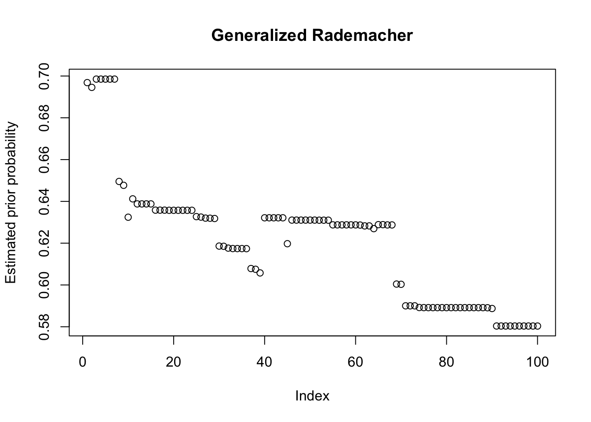
plot_heatmap(t(generalized.rad.Lhat[order(generalized.rad.obj), ]))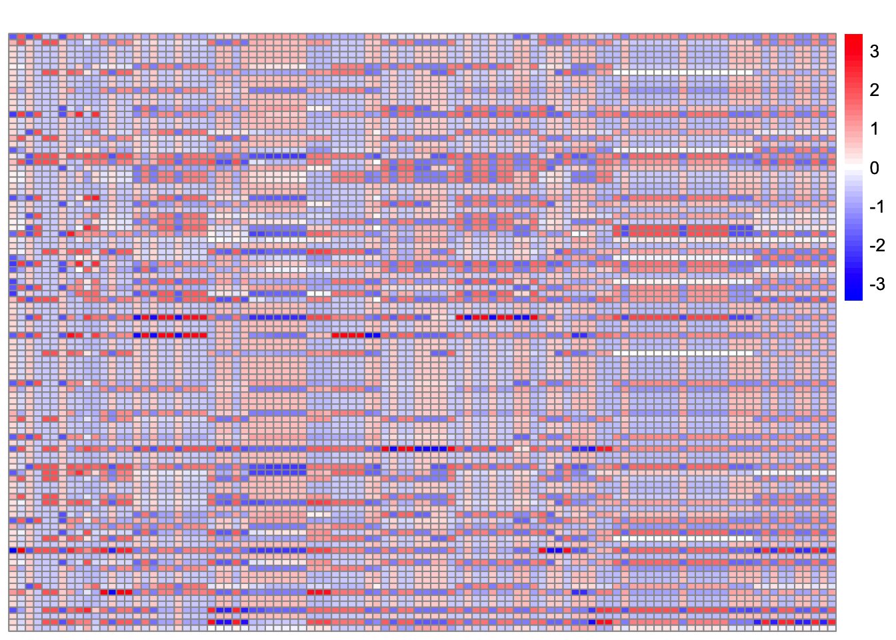
plot(sort(rad.obj), ylab = "logcosh objective",
main = 'Rademacher')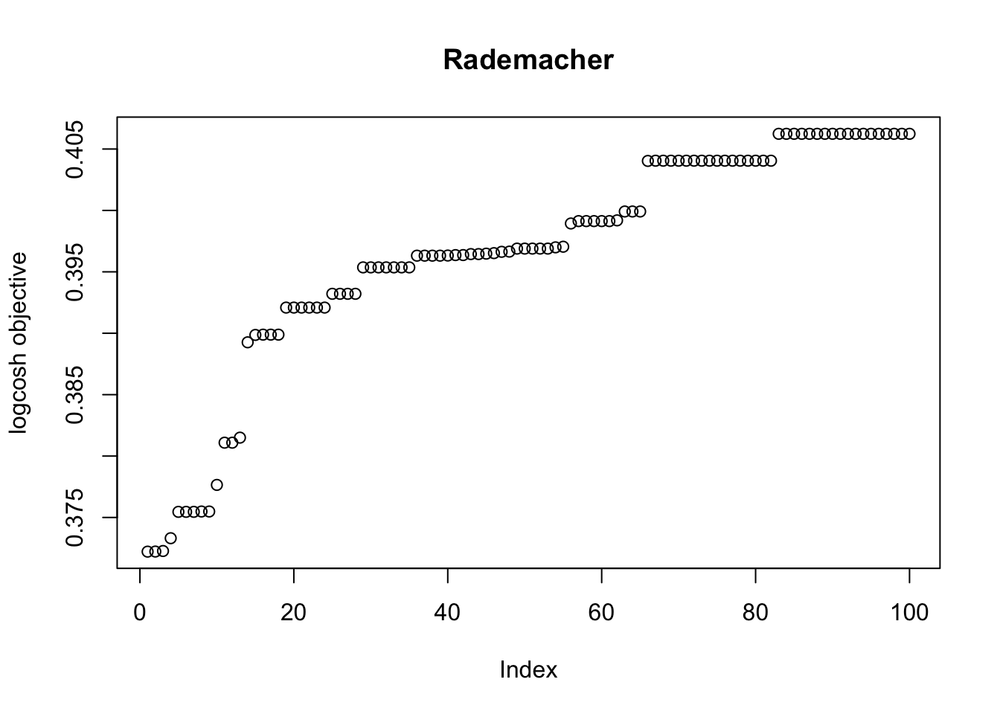
plot(rad.corr.max[order(rad.obj)], ylab = "Max correlation with a true source",
main = 'Rademacher')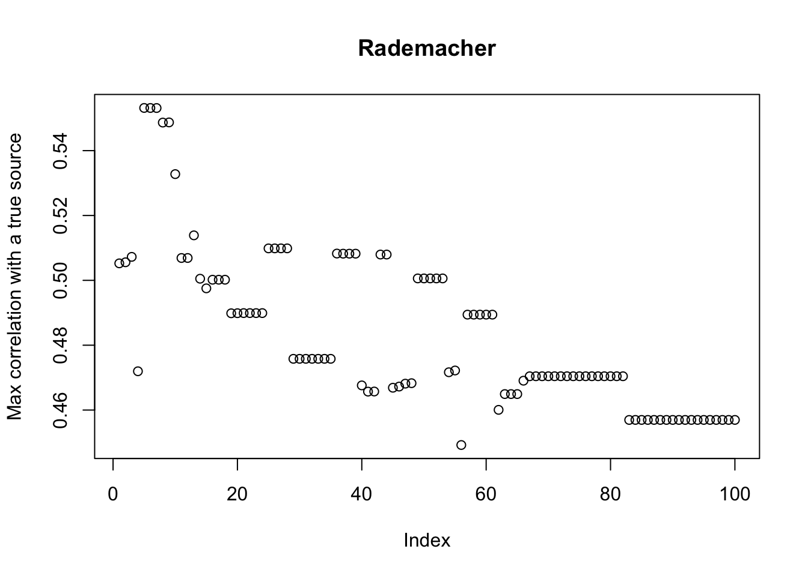
plot_heatmap(t(rad.Lhat[order(rad.obj), ]))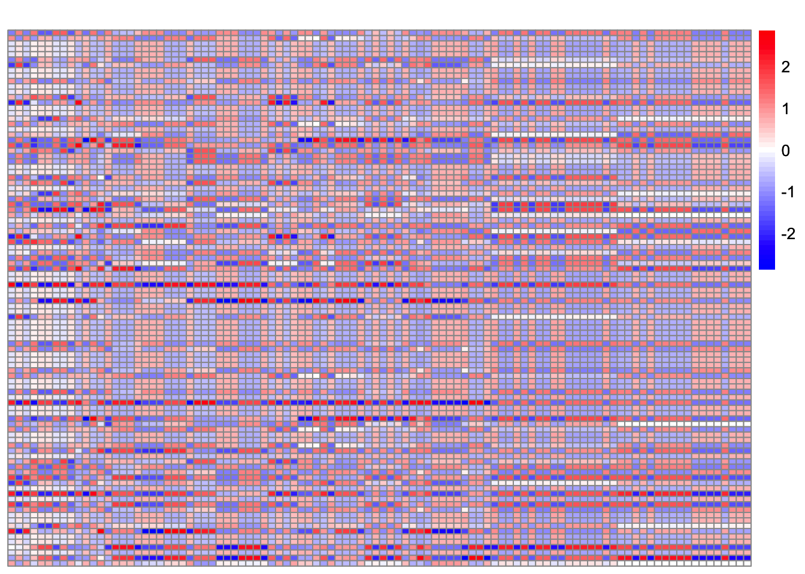
plot(sort(rad.0.2.obj), ylab = "logcosh objective",
main = 'Generalized Rademacher p=0.2')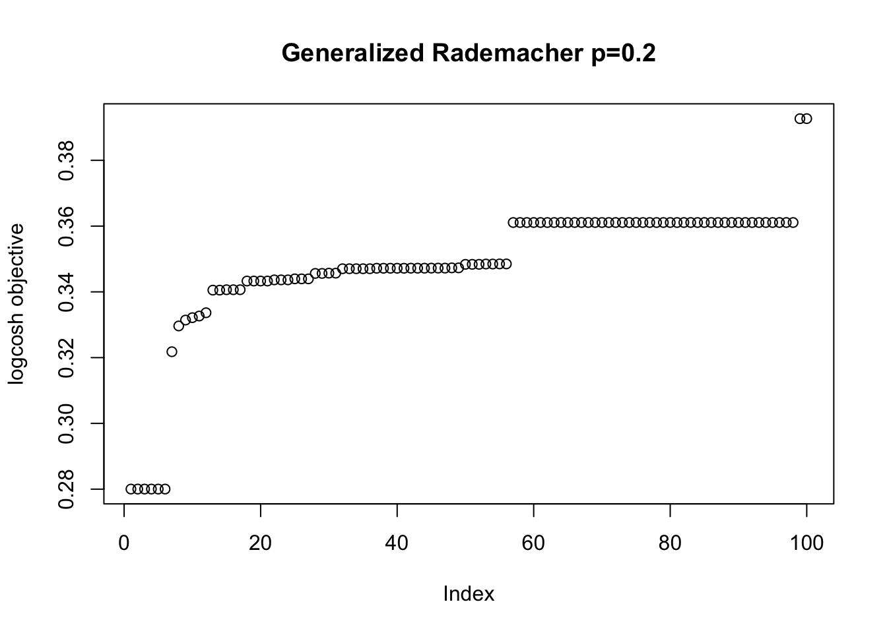
plot(rad.0.2.corr.max[order(rad.0.2.obj)], ylab = "Max correlation with a true source",
main = 'Generalized Rademacher p=0.2')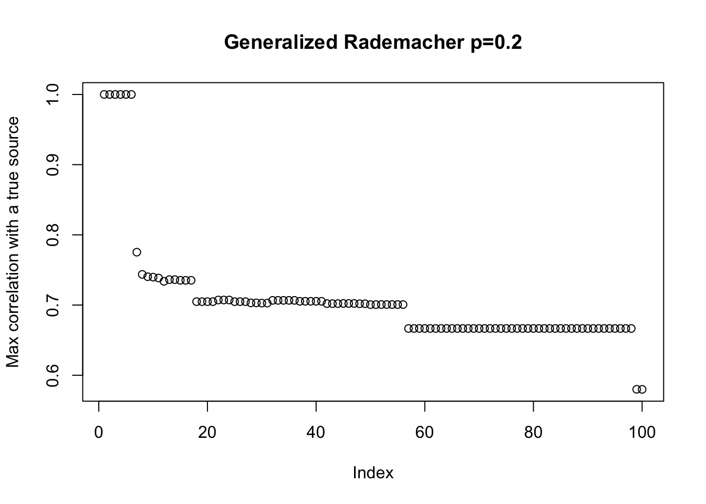
plot_heatmap(t(rad.0.2.Lhat[order(rad.0.2.obj), ]))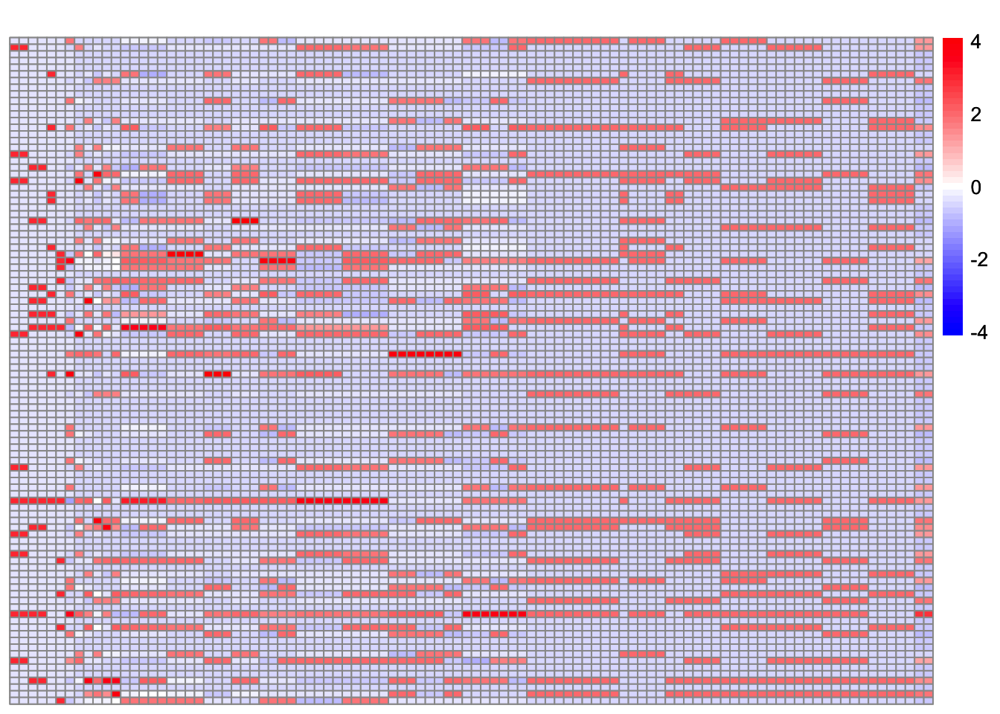
plot(sort(fastica.obj), ylab = "logcosh objective",
main = 'fastICA')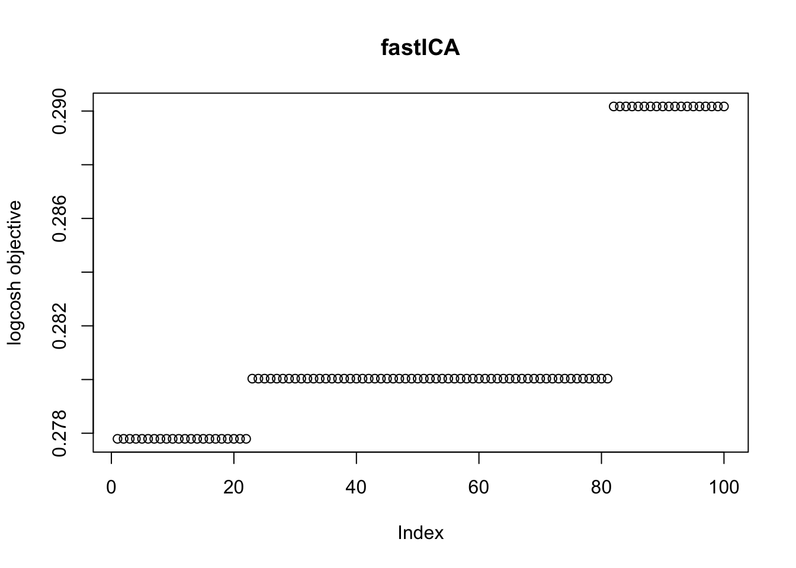
plot(fastica.corr.max[order(fastica.obj)], ylab = "Max correlation with a true source",
main = 'fastICA')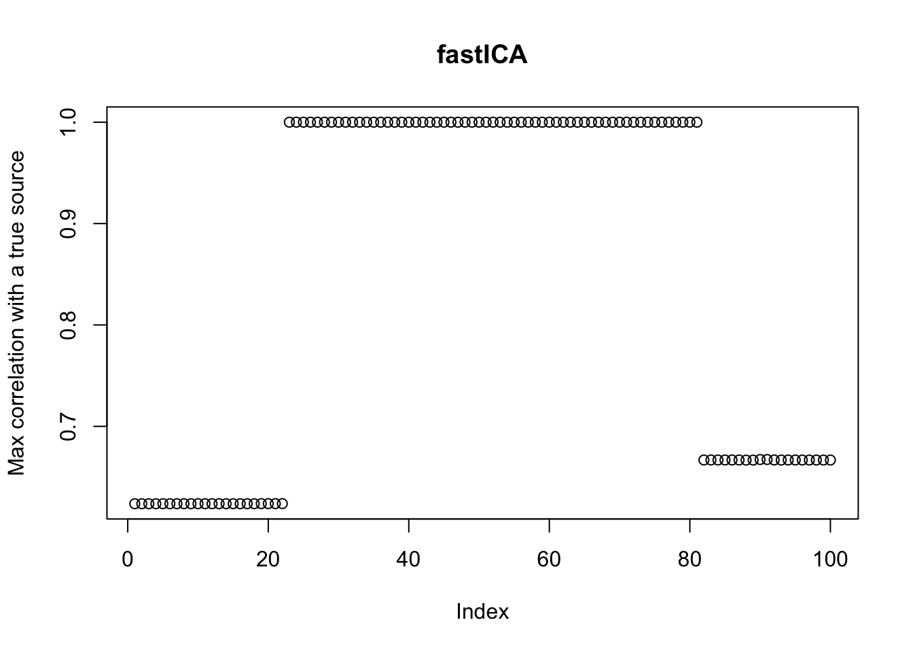
plot_heatmap(t(fastica.Lhat[order(fastica.obj), ]))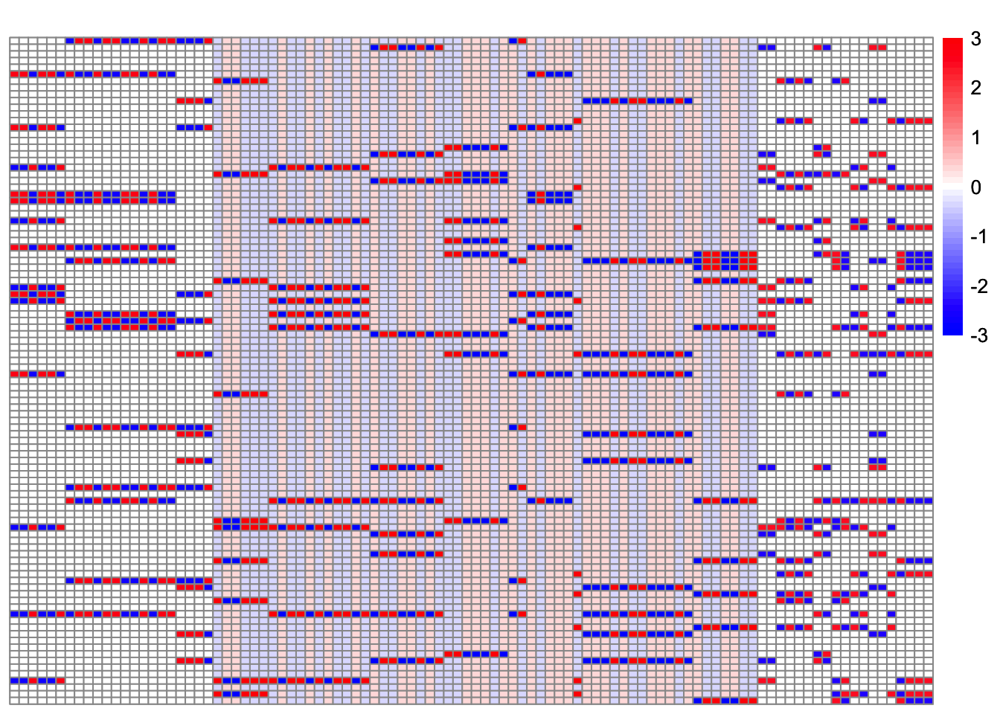
sessionInfo()R version 4.3.1 (2023-06-16)
Platform: aarch64-apple-darwin20 (64-bit)
Running under: macOS 26.2
Matrix products: default
BLAS: /Library/Frameworks/R.framework/Versions/4.3-arm64/Resources/lib/libRblas.0.dylib
LAPACK: /Library/Frameworks/R.framework/Versions/4.3-arm64/Resources/lib/libRlapack.dylib; LAPACK version 3.11.0
locale:
[1] en_US.UTF-8/en_US.UTF-8/en_US.UTF-8/C/en_US.UTF-8/en_US.UTF-8
time zone: America/Los_Angeles
tzcode source: internal
attached base packages:
[1] stats graphics grDevices utils datasets methods base
other attached packages:
[1] pheatmap_1.0.13 flashier_1.0.59 ebnm_1.1-42 workflowr_1.7.2
loaded via a namespace (and not attached):
[1] tidyselect_1.2.1 viridisLite_0.4.3 dplyr_1.1.4
[4] farver_2.1.2 fastmap_1.2.0 lazyeval_0.2.3
[7] promises_1.5.0 digest_0.6.37 lifecycle_1.0.5
[10] processx_3.8.7 invgamma_1.2 magrittr_2.0.5
[13] compiler_4.3.1 rlang_1.1.6 sass_0.4.10
[16] progress_1.2.3 tools_4.3.1 yaml_2.3.12
[19] data.table_1.17.8 knitr_1.51 prettyunits_1.2.0
[22] htmlwidgets_1.6.4 scatterplot3d_0.3-45 plyr_1.8.9
[25] RColorBrewer_1.1-3 Rtsne_0.17 purrr_1.0.4
[28] grid_4.3.1 git2r_0.36.2 fastTopics_0.7-44
[31] colorspace_2.1-2 ggplot2_3.5.2 scales_1.4.0
[34] gtools_3.9.5 cli_3.6.5 rmarkdown_2.31
[37] crayon_1.5.3 generics_0.1.4 otel_0.2.0
[40] RcppParallel_5.1.11-2 rstudioapi_0.18.0 httr_1.4.8
[43] reshape2_1.4.5 pbapply_1.7-4 cachem_1.1.0
[46] stringr_1.6.0 splines_4.3.1 parallel_4.3.1
[49] softImpute_1.4-3 matrixStats_1.5.0 vctrs_0.6.5
[52] Matrix_1.6-4 jsonlite_2.0.0 callr_3.7.6
[55] hms_1.1.4 mixsqp_0.3-54 ggrepel_0.9.6
[58] irlba_2.3.7 trust_0.1-9 plotly_4.12.0
[61] jquerylib_0.1.4 tidyr_1.3.2 glue_1.8.0
[64] cowplot_1.2.0 uwot_0.2.4 stringi_1.8.7
[67] Polychrome_1.5.1 gtable_0.3.6 later_1.4.8
[70] quadprog_1.5-8 tibble_3.3.1 pillar_1.11.1
[73] htmltools_0.5.9 truncnorm_1.0-9 R6_2.6.1
[76] rprojroot_2.1.1 evaluate_1.0.5 lattice_0.22-9
[79] RhpcBLASctl_0.23-42 SQUAREM_2026.1 ashr_2.2-63
[82] httpuv_1.6.17 bslib_0.10.0 Rcpp_1.1.0
[85] deconvolveR_1.2-1 whisker_0.4.1 xfun_0.57
[88] fs_1.6.6 getPass_0.2-4 pkgconfig_2.0.3